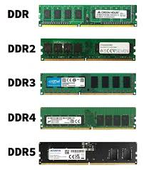

En 2025, las cuatro memorias RAM principales se dividen según su uso: la DDR5 es el estándar de alto rendimiento para computadoras modernas, la DDR4 permanece como la opción económica y compatible para equipos anteriores, la LPDDR5/X es la versión de bajo consumo integrada en smartphones y laptops ultraportátiles, y la HBM3 es la memoria especializada de ultra velocidad utilizada exclusivamente en servidores de Inteligencia Artificial y centros de datos.
